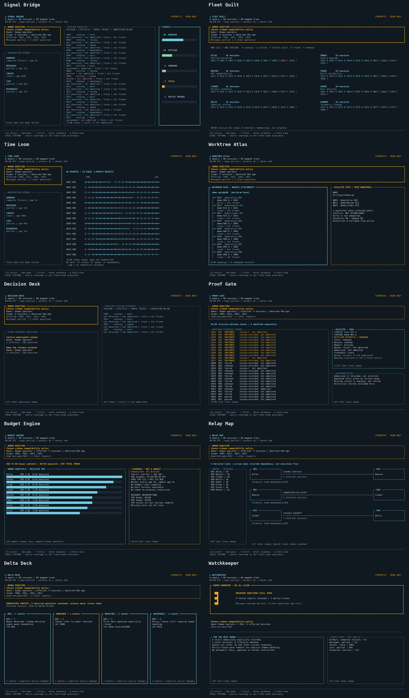
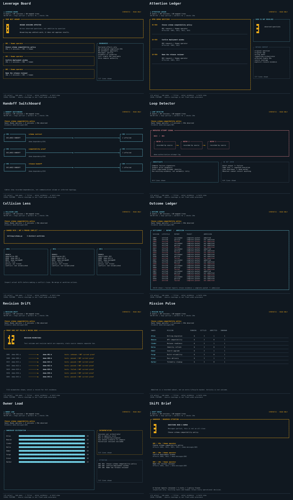

Orca Observer Portfolio
Twenty original terminal compositions in two sets. Every image comes from exact character layouts and deterministic synthetic fixtures. This is a companion for observing Stably.ai Orca, not another orchestration system.
Offline design prototypes only. No live data, approvals, dispatch, retries, messages to workers or worktree controls. All sample relationships and source identifiers are illustrative. Rendered snapshots are not a functioning terminal application.
Set 1: Ten observation views
Signal Bridge, Fleet Quilt, Time Loom, Worktree Atlas, Decision Desk, Proof Gate, Budget Engine, Relay Map, Delta Deck and Watchkeeper.
Switch between 160, 116 and 80 columns, choose a scenario, inspect full records and try color-free/ASCII output.


Set 2: Agent supervision
Leverage Board, Attention Ledger, Handoff Switchboard, Loop Detector, Collision Lens, Outcome Ledger, Revision Drift, Mission Pulse, Owner Load and Shift Brief.
Additional views emphasize cross-owner decisions, repeated failures, overlapping work, current evidence and human handover.

